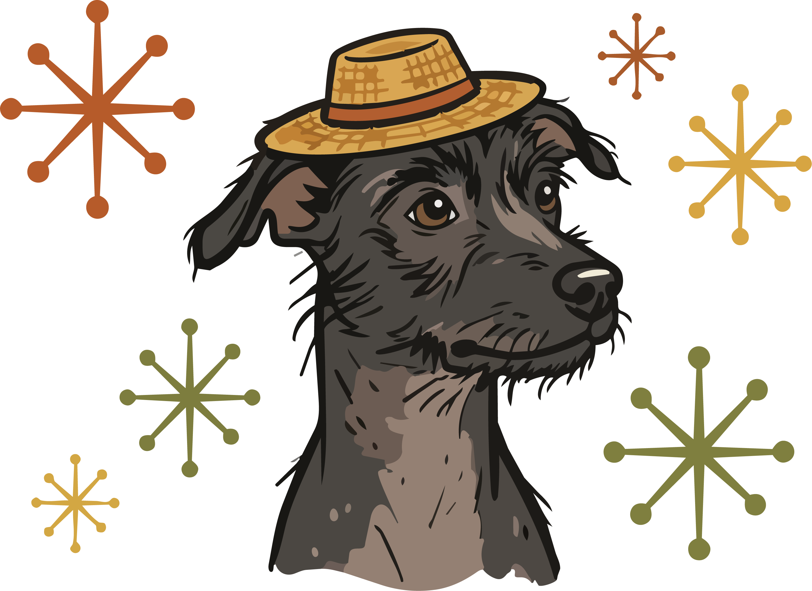
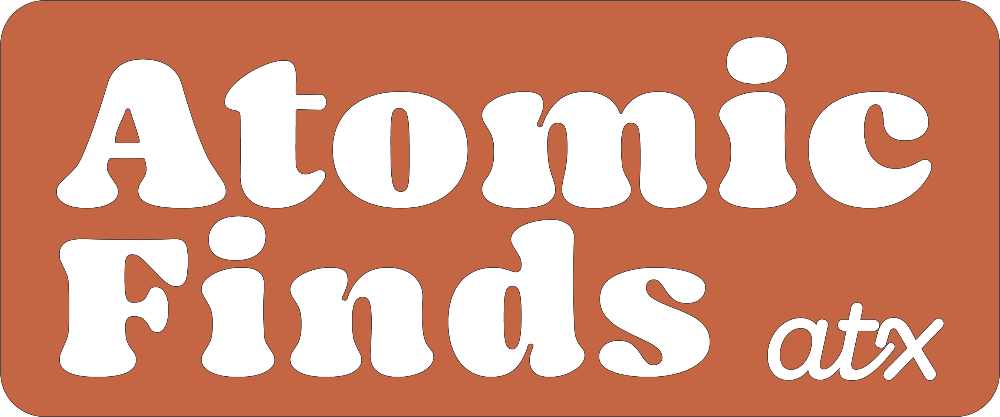
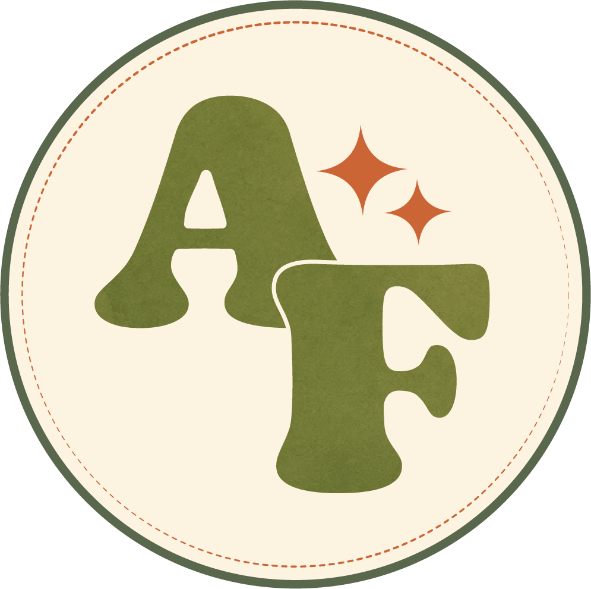
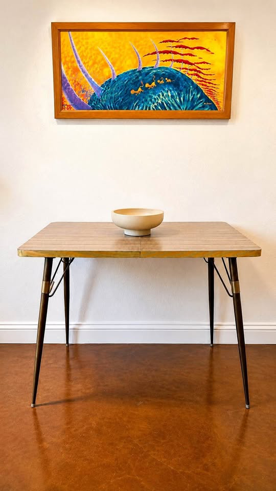

Available
Available
Maple
Curved bentwood, two little table levels, and a working lamp hiding behind a maple-leaf screen that glows when lit.

I have already tested this one for napping. It passed.
Tiny Time Machines for Your Home
The working system behind the brand: locked palette, Mamba type, the sparkle and starburst motifs, pattern rules, and the components the brand actually ships — product cards, inspection stamps and the Time Traveler's Record.
Furniture is always the hero. Everything here exists to frame a piece, never to compete with it.
Three official lockups. The stacked wordmark is primary. All three are set in Mamba — the wordmark is the typeface, so never re-set it in a substitute face.
Primary — stacked wordmark. Avocado green with the atx script in burnt orange. Default for light/cream grounds.

Reversed badge. Use where the mark needs to hold its own against photography or a busy ground.

AF roundel. The small-space mark — avatars, stamps, tags, favicons. Holds legibility down to 32px.
Six locked brand values. Cream is the dominant base — the palette works because most of the page isn't coloured. Ratios below are measured against cream #FDF3E1.
The brand has no white and no true black. Every source artifact's darkest value is a deep olive, so ink is olive too.
Two locked hues can't carry cream text at normal size. Rather than bend the brand values, the system adds one darker step of each for text-bearing surfaces. The locked value stays the graphic colour.
Three faces, and a hard cap of three type levels per composition. The personality lives in the Mamba/Pacifico pairing — body copy stays plain and legible.
Atomic Finds
Mamba. The wordmark face. Headings, piece names, stamp verdicts. Ships at assets/fonts/Mamba.otf. Never for body copy.
Tiny Time Machines
Pacifico. Two uses only: the tagline, and character voice (Nacho's asides, short pull quotes). Never a heading, never a paragraph.
Curated rattan & bamboo for the modern home — each piece with a story to tell.
Poppins. All body copy, UI and labels. An addition — source material only ever says "clean sans", so this one is swappable.
The most-repeated graphic in the brand and the cheapest way to make a surface recognisably Atomic Finds. Appears in the AF roundel, on tags, packaging and cards. Inherits currentColor. A slow twinkle is the one decorative animation allowed.
The atomic-age signal. Used once per surface, as a corner or behind a headline — never tiled. If both motifs appear together, the sparkle leads.
Never mix patterns or scales in a single section, and always leave generous cream around them.
(a) Hero background.
The atomic pattern, tone-on-tone and dropped to a whisper at 7% via --af-pattern-ghost.
Text keeps full contrast on top.
(b) Border / divider. A thin band of one pattern marking a featured section.

(c) Card-as-frame. Pattern is the card ground; the piece sits on a cream mat so the pattern frames it. The mat is mandatory — a photo bled to the edge breaks this role.
Attribution rule. Named weaves (Solihiya, Cane
Webbing, Palma, Open Rattan Lattice, Tight Wicker Sheet, Coiled Basket Wicker, Wrapped Reed Drum,
Sunburst Wrap) are real craft traditions and textures — check the inventory sheet's Weave
Pattern column per SKU to pick the right one for a card (see
atomic-finds-heritage-pattern-spec.md). Whichever name applies, it is never fused into
the logo and never presented as brand IP.
A product card's backdrop is the piece's own material, pulled from
assets/heritage-library/. Rattan gets rattan, bamboo gets bamboo. The backdrop is always the quiet
pattern, never the bold weave — the weave would compete with the furniture. The weave
appears only as a small swatch beside its origin credit. Full rules in
assets/documents/atomic-finds-heritage-pattern-spec.md.
rattan-leaf-pattern / rattan-vine-patternbamboo-patternpalma-patternA piece with no weave material — wood, formica, acrylic, glass — takes plain cream and shows no weave swatch. It makes no craft claim it cannot support. Never borrow another material's pattern to fill the gap.
 Solihiya weave · Philippines
← swatch and credit always travel together.
Solihiya weave · Philippines
← swatch and credit always travel together.
Rounded rectangle (12px), theme outline and text on cream plate. Hover lifts with a crisp flat offset stamp shadow in matching theme color.
Era, material and availability. Availability is the only tag that uses a filled brand green/orange, so status stays scannable.
Soft, natural layered depth with cheerful brand color undertones (Pink, Avocado Green, Mustard Yellow, and Atomic Orange). Replaces harsh flat ink cuts with playful, natural depth.
--af-shadow-pink
--af-shadow-green
--af-shadow-yellow
--af-shadow-orange
The supplied artwork in assets/stamps/. Each has a transparent ground, so it
stamps onto cream, a photograph or a patterned card without carrying a plate with it. Flat always — never add
blur or a drop shadow. A supporting cameo: small, and never the lead visual.


The photo takes the most area and the chrome stays quiet — the card exists to frame the piece. Every piece is named, and the copy sells an adoption, not a transaction.
Available
Curved bentwood, two little table levels, and a working lamp hiding behind a maple-leaf screen that glows when lit.

I have already tested this one for napping. It passed.
 Available
Available
Small footprint, big atomic energy. Warm woodgrain top, tapered legs, brass-tone details, and a fold-down leaf on both sides.
The four rooms. Each uses its illustrated icon from the brand icon set rather than a generic UI glyph — the brand’s “icons” are drawings.
The provenance strip from the passport: a named craft texture flanked by the plants of its region, with the tradition credited underneath. The attribution is structural, not decorative.
Solihiya weave · Philippines
Craft heritage: Filipino cane-weaving tradition
The brand's most important physical artifact — deliberately not a certificate of authenticity. It should feel collectible enough that a buyer keeps it. Same template every time; only the details swap.
Atomic Finds ATX
Tiny Time Machines for Your Home
Found Across Time + Space
This tiny time machine has found a new home.
Why dashed baselines. Date adopted and care notes are left blank on purpose — a record someone writes on is kept, and a printed-full card is not.
Warm, curious, witty, colourful. Never corporate, never precious. First person plural (“we curate”), speaking directly to “you”. Short plain sentences.
Names, never describes. Every piece gets a person's name — Orbit, Agnes, Miami — and a sale reads as an adoption.
“Found Across Time + Space”
Curious and observational. A companion commenting on a piece, not a salesperson closing on it.
“I have already tested this one for napping.”
Mysterious and deadpan-official. They sign off in a mock-bureaucratic register.
“Approved for Time Travel.”